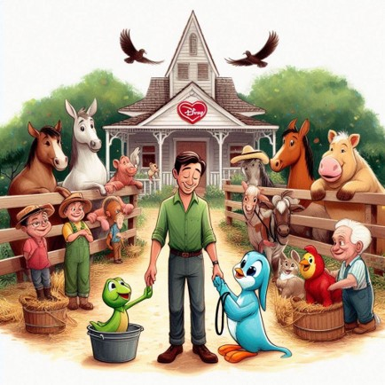

| 🐾 Mascotas 🐾 Animales de granja 🐾 Servicios del campo 🐾 Material de Apoyo |
¿Quiénes somos?
|
Somos una comunidad comprometida en brindar apoyo y recursos a los campesinos colombianos sobre el cuidado y acompañamiento de sus animales.
⭐ Solidaridad: Apoyamos a los campesinos colombianos con recursos y conocimientos para mejorar la calidad de vida de sus animales. ⭐ Compromiso: Nos dedicamos a brindar asistencia continua y efectiva a los agricultores en sus prácticas de cuidado animal. ⭐Empatía: Entendemos las necesidades de los campesinos y sus animales, ofreciendo soluciones adaptadas a cada situación. ⭐ Educación: Proporcionamos información y capacitación para promover el bienestar animal y prácticas agrícolas sostenibles. ⭐ Transparencia: Operamos con honestidad y claridad, asegurando que los campesinos entiendan y confíen en los recursos y apoyo que ofrecemos. ⭐ Resiliencia: Ayudamos a los campesinos a adaptarse y superar desafíos, fortaleciendo sus capacidades para el manejo animal. ⭐ Colaboración: Trabajamos junto a los campesinos para desarrollar estrategias y técnicas que beneficien a sus comunidades y animales. ⭐ Innovación: Implementamos métodos modernos y eficientes para mejorar el cuidado y manejo de los animales en las fincas. ⭐ Sostenibilidad: Fomentamos prácticas que no solo beneficien a los animales, sino que también sean ambientalmente responsables. ⭐ Comunidad: Creamos una red de apoyo donde los campesinos pueden compartir experiencias, aprender unos de otros y crecer juntos. |